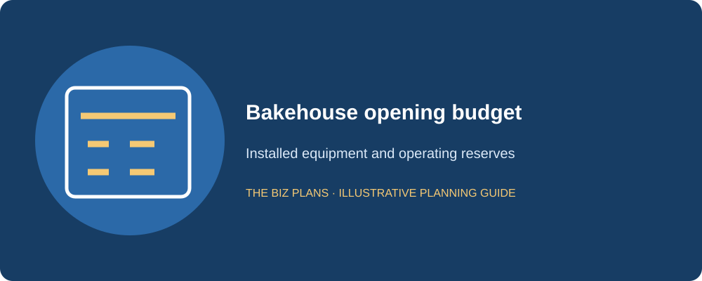
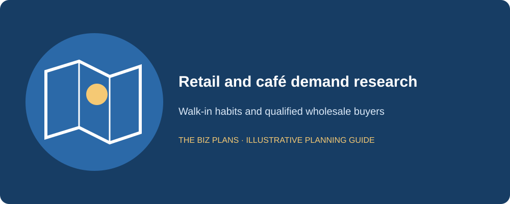
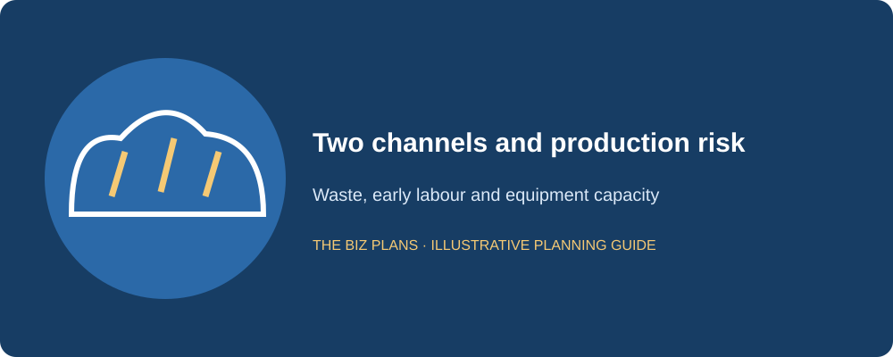
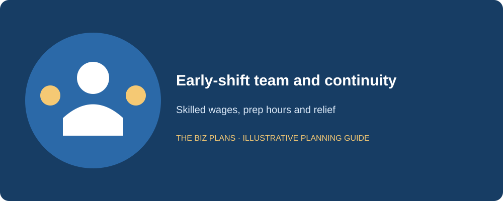
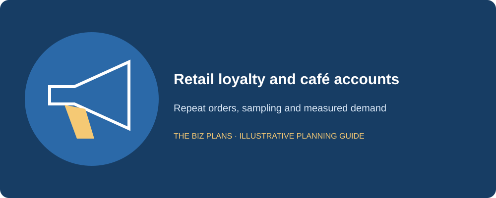
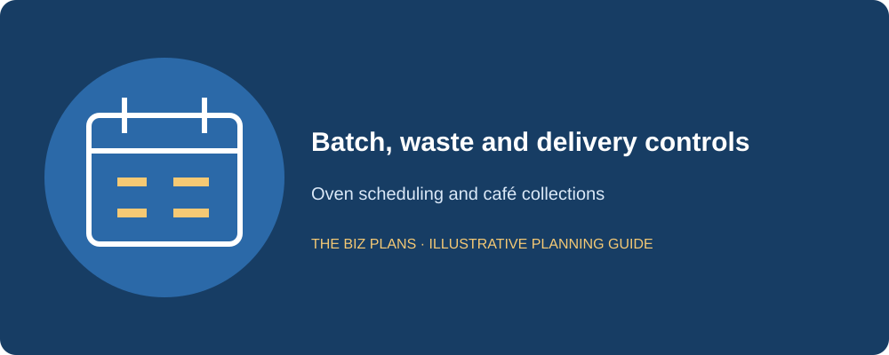

This bakery business plan sample follows Butter & Crumb Bakehouse, a fictional Toronto neighbourhood bakery selling bread and pastries to walk-in customers and supplying eight fictional café accounts. The founder is a former head baker with ten years of artisan baking experience. Each sample section is followed by an italic practitioner note explaining what a lender needs to verify. The plan connects recipes and customer demand to the early-shift team, equipment and cash required to deliver consistently.
Comparing a bakery with other startup options? Explore food, retail and service business ideas in Canada.
Use the guide to compare two business models inside one bakery. Retail provides immediate payment but variable demand; wholesale can support scheduled production while tying up cash in invoices. The example includes an itemized opening budget, channel margins, waste controls, staffing assumptions and three linked financial statements. Use the checklist as a bakery business plan template Canada applicants can adapt to their own premises, equipment and customers. Replace the illustrative figures with contractor and supplier quotes, actual café terms and a production schedule that the team can execute.
All company details and financial figures in this sample are illustrative examples showing plan structure — not market data, and not forecasts for any real business.
How to use this sample
- Read the annotations to understand what a lender or investor checks in each section.
- Swap in your actual quotations, customer research and operating assumptions; recalculate the linked statements.
- Do not submit a fictional sample to a lender. Use business plan writing services to develop an application based on your business.
Start with the product range, production schedule and premises feasibility. Check oven capacity, electrical and ventilation needs, refrigeration, deliveries and customer circulation together. A quoted oven price is not its installed cost. Keep the wholesale delivery promise and the morning retail opening time on the same scheduling worksheet before committing to either.
How much does it cost to open a bakery in Canada?
Butter & Crumb’s illustrative startup range is $110,000–$190,000, with an illustrative $180,000 base budget. It is a scenario for the proposed Toronto bakery, not a Canadian market average. A premises with suitable existing infrastructure may differ substantially from one requiring extensive service upgrades. Obtain dated installed quotes and preserve operating cash rather than allocate every available dollar to equipment.
| Use of funds | Illustrative amount |
|---|---|
| Leasehold improvements | $50,000 (illustrative) |
| Deck ovens, proofer and mixers | $60,000 (illustrative) |
| Refrigeration | $10,000 (illustrative) |
| Display cases | $8,000 (illustrative) |
| Point-of-sale system | $3,000 (illustrative) |
| Signage | $4,000 (illustrative) |
| Initial ingredients | $5,000 (illustrative) |
| Packaging inventory | $2,000 (illustrative) |
| Deposits and prepayments | $5,000 (illustrative) |
| Licence and training allowance | $3,000 (illustrative) |
| Launch marketing | $5,000 (illustrative) |
| Working-capital reserve | $22,000 (illustrative) |
| Contingency cash | $3,000 (illustrative) |
| Total | $180,000 (illustrative) |
Compare new and used deck ovens, proofers and mixers by condition, installation requirements, warranty, parts support and maintenance history. The illustrative equipment bundle of $60,000 should be replaced by named models and individual quotations. A specialist will assess useful life and serviceability; depreciation in a spreadsheet is not evidence of collateral value.
The illustrative $25,000 working-capital and contingency cash remains available after the opening stock and setup spending. Wholesale customers may not pay until weeks after ingredients and wages are due. A larger first production run can therefore increase funding needs even when each order appears profitable. Budget stock and payroll alongside receivables rather than assume the wholesale contracts finance themselves.

Lenders look for quote-supported assets and sufficient cash for wages and wholesale collection delays, not only a list of attractive machines.
Are bakeries profitable?
They can be, but the answer depends on product contribution, skilled labour, waste, occupancy and channel terms. This sample assumes illustrative 70% retail gross margin and 50% wholesale gross margin before labour and overhead. With illustrative revenue split 60% retail and 40% wholesale, blended gross margin is 62%. These are planning assumptions, not claimed bakery-industry averages.
Illustrative Year 1 sales of $420,000 produce illustrative net profit of $18,275 after operating costs, interest, depreciation and the simplified tax provision. The founder’s illustrative $48,000 salary is already included in the $135,000 labour budget. The company retains profit and assumes no owner dividends, so the profit line is not a promise of extra personal income.
Wholesale can support predictable production, but lower prices, delivery work and delayed payment change the economics. Retail has a higher illustrative gross margin but more uncertain daily volume. Before adding another café account, calculate its contribution after packaging, route time, rejected deliveries and collection risk. A busy bakery can lose money if it increases low-contribution volume without enough capacity or cash.
Sample executive summary
Butter & Crumb Bakehouse will be a Toronto neighbourhood bakery producing artisan bread and pastries for walk-in retail customers and eight fictional café accounts. I founded the concept after ten years in artisan baking, including head-baker responsibility for production timing, recipe consistency and staff training. Our range will be focused enough to manage waste and early-shift capacity while offering dependable everyday products.
The opening model will combine immediate-payment retail with scheduled wholesale deliveries. Café agreements will specify assortment, order cutoffs, quality acceptance and payment terms. We will validate local retail demand through interviews and test sales before treating the neighbourhood as a guaranteed market. Product costing will include usable yield, packaging and expected waste, and route planning will account for the time and staff required to serve wholesale customers.
The illustrative startup budget is $180,000, funded by an illustrative $120,000 term loan and $60,000 owner equity. Illustrative Year 1 revenue is $420,000, split 60% retail and 40% wholesale, rising to $680,000 by Year 3. A documented early-shift roster and trained alternate baker will reduce dependence on the founder. The equipment plan will use current installed quotations and a realistic maintenance schedule. Repayment will come from collected sales after wages, ingredients, taxes and required replacement spending, supported by a monthly model that shows the gap before café invoices are paid.
A lender wants the production skill and channel mix reflected in staffing, collection timing and equipment capacity; the fictional café accounts are not signed customers.
Sample market analysis
Our fictional retail customer is a nearby resident or worker seeking fresh bread and pastries with predictable quality and convenient pickup. The wholesale customer is a café operator needing reliable products and delivery timing. We hypothesize that a focused artisan range can serve both groups, but each proposition requires separate research. A café buyer’s enthusiasm does not prove walk-in demand at our premises.
Retail research will include competitor visits, customer interviews and small test sales where permitted. Record location, daypart, price, product mix and limitations. We will compare supermarkets, other bakeries, cafés and home baking rather than treat every neighbourhood resident as a potential daily buyer. No numerical claims about Toronto demand, population or bakery-market growth are made in this sample.
Wholesale research will interview café decision-makers about volumes, ordering patterns, returns, existing suppliers and payment approval. The real plan will attach signed terms or qualified proposals, with names redacted only where appropriate. Eight fictional accounts are a planning assumption. If fewer accounts sign, the production schedule and cash case must be revised instead of replacing them with anonymous customers.

Banks read for separate evidence of retail demand and recurring wholesale orders, including who decides, what is purchased and when payment arrives.
Build an equipment and working-capital plan
Connect your bakery quotes, production roster and café terms to the lender’s requirements.
Explore business plan servicesWhat makes a bakery plan different?
Retail and wholesale need separate economics. Illustrative Year 1 revenue is $252,000 retail and $168,000 wholesale. Retail receipts are assumed immediate in the simplified model, while café receivables use an illustrative 30-day proxy. Show both contribution and cash timing. A blended revenue line can conceal that an added account needs more early labour and delivery cost than its margin supports.
The early shift needs actual people. Production may begin at an illustrative 4 a.m., before the shop opens. The roster must cover mixing, proofing, baking, packing, cleaning and relief. We will train an alternate baker and document recipes and timing. A forecast that depends on a single head baker working every early shift is a key-person risk even when the oven capacity is adequate.
Yield and waste belong in costing. The illustrative recipe model includes a 6% finished-product waste allowance within direct costs; it is not added again as a second expense. At an illustrative 100 units produced, 94 are expected saleable in that test. Actual waste will be measured by product and cause. Day-old pricing, eligible seconds sales or donations need their own records, food-safety controls and tax review rather than an assumed recovery at full price.
Equipment can support security, subject to approval. Named deck ovens, proofers and mixers may support an equipment-financing case. Verify asset eligibility and borrower conditions under the CSBFP with the lender. Neither equipment ownership nor program eligibility guarantees approval or the appraised value. Match the repayment period to supported useful life and premises tenure.

Sample company description
Butter & Crumb will operate through a fictional Ontario corporation owned by the founder. The lease and premises assessment will confirm the proposed food-production and retail use. We will verify applicable municipal licensing, public-health requirements, food-handler coverage and building or fire approvals. Wholesale delivery and product traceability procedures will be reviewed for the actual activities, without assuming that retail approval automatically resolves every supply arrangement.
We will maintain separate business banking, bookkeeping and approval records. The sample assumes taxable revenues will exceed the CRA’s $30,000 small-supplier threshold. The registration date depends on how and when the threshold is exceeded, with associated businesses considered where applicable; consult the CRA’s GST/HST registration guidance. Collections of HST are not sales revenue. The real cash forecast must distinguish remittances, recoverable input tax credits and any taxes that remain a cost.
We will check applicable Ontario employment and WSIB obligations before engaging staff, rather than assume that every worker is an independent contractor. An accountant will review payroll and tax setup, while qualified advisers review the contracts and insurance relevant to our activities. Each compliance task will have an owner, a due date and supporting evidence. The fictional company described here is separate from The Biz Plans and from the real author’s practice.
A lender wants a borrower and premises that can legally execute both sales channels, with the resulting approval costs in the opening budget.
Sample organization and early-shift staffing
I will manage recipes, production quality, purchasing and the daily cash review. A second skilled baker will provide preparation and relief coverage, while retail and packing support will serve customers and prepare deliveries. The real staffing plan will assign hours to each task and show which roles can overlap safely. Bookkeeping support will reconcile retail settlements, café invoices, payroll and taxes.
For illustration, the Year 1 labour total is $135,000. It includes illustrative owner pay of $48,000, a skilled-baker allowance of $33,280 at an illustrative $32 hourly rate for 20 weekly hours over 52 weeks, and support wages of $45,760 at an illustrative $22 hourly rate for 40 weekly hours. An illustrative $7,960 balance supports employer costs and coverage. These are budgeting examples, not claims about current wage rates; the actual roster and statutory costs must be recalculated.
The continuity file will contain recipes, fermentation schedules, equipment settings, supplier contacts and café order cutoffs. A trained alternate will run a normal early shift before we rely on emergency coverage. If skilled staffing falls short, we will reduce the product range or delivery commitments rather than promise the same volume with fewer qualified hands.

Lenders test whether the wage budget covers the actual early-shift workload and whether production can continue when the founder or head baker is absent.
Sample bakery products and pricing
The opening range will include a small set of artisan breads and pastries using shared ingredients and production steps. Each recipe will state batch size, usable yield, ingredients, packaging and labour touchpoints. The production sheet will separate shelf-stable inputs from products needing refrigeration or special handling, with allergen information and traceability maintained.
Retail prices will reflect direct contribution and the costs of the shop. Wholesale prices will use account-specific order quantities, packaging and delivery commitments. The illustrative 70% and 50% channel gross margins are targets to justify with actual recipe and price worksheets. A discount given to win a café changes the blended model and must not disappear from the forecast.
Café orders will be accepted to an agreed cutoff so the early shift can plan batches. The customer will approve specifications and substitutions in advance. Custom products are a separate development decision, not a free extension of the opening range. We will test whether the order fits oven capacity, staff time and the morning dispatch deadline.
A lender reads for a costed range and realistic yield; wholesale pricing must include the work of reliably serving the account.
Sample bakery marketing and sales plan
The retail launch will use accurate local listings, clear opening hours, product photography and neighbourhood introductions. A limited preview will test the range and service timing before a larger promotion. The illustrative launch allowance is $5,000, with recurring marketing included in operating expenses. We will measure repeat purchases and product contribution rather than assume every visitor becomes a regular.
Wholesale selling will target café buyers whose volume and delivery needs fit the route. We will offer samples with a commercial discussion about price, cutoffs, acceptance and payment, then document the next step. The eight fictional Year 1 accounts must be replaced with signed orders or a qualified pipeline in the real plan. Café credit approval and concentration will be reviewed before expanding terms.
A weekly sales review will compare retail traffic, wholesale reorder patterns, waste and capacity. If one product sells slowly, we will test smaller batches before using discounts to clear a large daily surplus. Marketing success is useful only when production and cash collection can support the resulting order.

Lenders want distinct acquisition paths and account terms, with sales growth aligned to production and receivables funding.
Sample bakery operations plan
Daily production will begin from confirmed wholesale orders and a retail forecast informed by prior sales. The baker will sequence mixing, proofing and oven loads to meet dispatch and opening times. Logs will track batch yield, quality issues and waste. Equipment cleaning and preventive maintenance will have assigned windows so production does not depend on every machine running indefinitely without service.
Wholesale deliveries will use a planned route with packing lists, acceptance records and invoice references. The illustrative customer terms are 14–30 days, with the financial example using a 30-day receivables proxy. These are assumed contract terms, not a universal café practice. The bookkeeper will age invoices and escalate overdue balances before increasing the account’s credit exposure.
End-of-day controls will reconcile retail settlements, remaining stock and approved markdowns or donations. The opening calendar will use gates for lease conditions, installation, approvals, staff training and trial production. An oven failure case will identify reduced production, repair support and client communication. Replacement capacity should not be claimed unless an actual arrangement exists on affordable terms.

A lender follows yield, dispatch reliability and the gap between buying ingredients, paying the early shift and collecting wholesale invoices.
Illustrative three-year financial statements
Every financial amount, rate and ratio in this sample is illustrative. Tables are in CAD; sales exclude GST/HST. The assumed 15% tax provision is a modelling simplification, not a statement of the business’s applicable tax rate. Actual taxes, remittance timing and recoverable input tax credits require accountant review. These annual statements are linked, but a real financing application also needs monthly cash flow and a complete debt schedule.
The illustrative opening balance sheet has $135,000 fixed assets, $7,000 ingredients and packaging, $5,000 deposits and $25,000 cash. It is funded by $120,000 debt and $60,000 owner equity, with an $8,000 pre-opening loss. The illustrative 60% retail/40% wholesale mix stays constant, producing 62% blended gross margin. Receivables use 30 days of wholesale revenue on a 360-day modelling year, rounded to dollars; the actual plan must use invoice dates and negotiated terms.
| Line item | Year 1 (illustrative) | Year 2 (illustrative) | Year 3 (illustrative) |
|---|---|---|---|
| Revenue | $420,000 | $550,000 | $680,000 |
| Direct cost of sales | $159,600 | $209,000 | $258,400 |
| Gross profit | $260,400 | $341,000 | $421,600 |
| Labour, including founder salary | $135,000 | $170,000 | $205,000 |
| Base rent | $36,000 | $38,000 | $40,000 |
| Wholesale delivery expense | $9,000 | $12,000 | $15,000 |
| Other operating expenses | $35,000 | $43,000 | $51,000 |
| EBITDA | $45,400 | $78,000 | $110,600 |
| Depreciation | $13,500 | $13,500 | $13,500 |
| Interest | $10,800 | $9,000 | $7,200 |
| Profit before tax | $21,100 | $55,500 | $89,900 |
| Tax provision: illustrative 15% | $3,165 | $8,325 | $13,485 |
| Net profit | $17,935 | $47,175 | $76,415 |
| Line item | Year 1 (illustrative) | Year 2 (illustrative) | Year 3 (illustrative) |
|---|---|---|---|
| Net profit | $17,935 | $47,175 | $76,415 |
| Depreciation added back | $13,500 | $13,500 | $13,500 |
| Net working-capital cash movement | ($8,000) | ($4,333) | ($4,334) |
| Cash from operations, after interest and tax | $23,435 | $56,342 | $85,581 |
| Replacement capital spending | ($4,000) | ($5,000) | ($6,000) |
| Debt principal or operating-line reduction | ($20,000) | ($20,000) | ($20,000) |
| Owner dividends | $0 | $0 | $0 |
| Net change in cash | ($565) | $31,342 | $59,581 |
| Opening cash | $25,000 | $24,435 | $55,777 |
| Closing cash | $24,435 | $55,777 | $115,358 |
| Line item | Year 1 (illustrative) | Year 2 (illustrative) | Year 3 (illustrative) |
|---|---|---|---|
| Cash | $24,435 | $55,777 | $115,358 |
| Inventory and packaging | $9,000 | $11,000 | $13,000 |
| Trade receivables | $14,000 | $18,333 | $22,667 |
| Deposits and prepayments | $5,000 | $5,000 | $5,000 |
| Net fixed assets | $125,500 | $117,000 | $109,500 |
| Total assets | $177,935 | $207,110 | $265,525 |
| Trade payables | $8,000 | $10,000 | $12,000 |
| Total debt outstanding | $100,000 | $80,000 | $60,000 |
| Owner contributed capital | $60,000 | $60,000 | $60,000 |
| Retained earnings, including pre-opening loss | $9,935 | $57,110 | $133,525 |
| Total liabilities and equity | $177,935 | $207,110 | $265,525 |
The opening model records pre-launch spending separately from recurring operating expenses. Capitalized assets are depreciated; stock held for sale remains inventory until sold or written down. Cash reserved for payroll is not an opening-day expense. The balance sheet carries the pre-opening loss in retained earnings, preventing funding and setup costs from disappearing between statements. Real accounting treatment may differ and should be confirmed before filing or submission.
This example assumes no year-end unpaid payroll or tax, no dividends and no unlisted financing. It shows supplier credit explicitly where assumed, rather than silently treating unpaid invoices as free cash. Tax and payroll balances still need separate monthly schedules. Do not infer that a positive annual closing cash balance guarantees every month is funded; test the lowest cash point, delayed collections and required debt payments.

Lenders lend against available repayment cash, not accounting profit. Trace the cash tied up in inventory or receivables and deduct required principal and replacement spending before asserting debt capacity.
Draft the plan with your own inputs
Use the free generator to organize the business model, then verify your evidence and financial assumptions.
Open the free AI generatorSample funding request and repayment source
Ask: We request an illustrative $120,000 term loan alongside an illustrative $60,000 owner contribution. The model uses illustrative annual principal of $20,000, with illustrative interest of $10,800, $9,000 and $7,200 across the forecast. The actual rate, fees, term, security and payment dates must be established with the lender.
Use of funds: The illustrative $180,000 pays for installed equipment, leasehold work, stock, deposits, launch needs and protected cash. The request is equipment-heavy, but the actual lender must confirm any CSBFP eligibility, valuation and documentary requirements. Name each oven, proofer and mixer and obtain a supportable useful-life and installation assessment. Do not describe an illustrative eligibility scenario as an approved loan.
Repayment source: Collected retail receipts and café invoices will cover wages, ingredients, tax and scheduled principal. Illustrative Year 1 operating cash of $23,775 leaves a $225 reduction in opening cash after $20,000 principal and $4,000 replacement spending. That tight first-year headroom deserves explicit attention. Test delayed café payments, higher waste and an oven outage, then identify additional equity or operating changes if reserves are insufficient.
Wholesale profit may sit in invoices while early-shift wages are paid in cash. The lender wants collection timing and first-year repayment headroom made visible.
Bakery business plan template checklist
Use these ten sections as a working outline. Keep the main document focused on the decisions the recipient must make, and move detailed supporting records into appendices. The opening budget, staffing plan and forecast should tell the same story. A template helps structure the work; it does not establish whether the underlying assumptions are true.
- Executive summary: customer, offer, founder, funding and repayment in one coherent overview.
- Company description: borrower, ownership, location, registrations and milestones.
- Market analysis: local demand, competitors, test results and dated sources.
- Organization: qualifications, responsibilities, remuneration and backup coverage.
- Products or services: specifications, pricing and contribution by channel.
- Marketing: pipeline, conversion assumptions, launch costs and retention.
- Operations: capacity, suppliers, delivery controls and the opening timetable.
- Startup costs and funding: quotations, owner equity, loan ask and reconciled uses.
- Financial statements: income, cash flow, balance sheet, debt and downside cases.
- Risks and appendices: contracts, résumés, quotes, permissions and contingency actions.
Before submission, reconcile batch yields to product costs, shifts to payroll and account orders to oven and delivery capacity. Check wholesale payment terms and show the lowest monthly cash balance. If the cash case depends on every café paying promptly, prepare a documented delay scenario.
Review the industry business plan hub and bank loan planning requirements. Related annotated examples: coffee shop, restaurant and food truck.
Bakery business plan FAQs
Can I use this as a bakery business plan template?
Yes. Use the headings and checklist as a structural template, then replace Butter & Crumb Bakehouse’s fictional details and every illustrative figure with your own evidence. Gather current quotations, customer research, staffing costs and contract terms before changing the forecast. Recalculate all linked statements when one assumption changes, and preserve a downside case. Do not submit this sample as your actual business plan. Confirm the recipient’s requirements and obtain qualified review of material accounting, legal or regulatory issues.
How much does it cost to open a bakery in Canada?
This fictional bakery uses an illustrative $110,000–$190,000 range and an illustrative $180,000 base budget. It is not a Canadian average. Your premises, installation needs, ovens, refrigeration, range and opening reserve determine the actual amount. Compare new and used equipment using inspection, service support and installed quotations, not purchase price alone. Keep initial stock distinct from ingredients consumed after opening. Obtain local quotes and fund the gap between production wages and café invoice collections before choosing debt and owner equity.
Are bakeries profitable?
A bakery can be profitable when product contribution covers skilled labour, occupancy, delivery, waste and financing costs. There is no reliable conclusion from ingredient markup alone. This sample uses different illustrative retail and wholesale margins, and includes founder salary in labour. It shows positive accounting profit with tight first-year cash headroom after principal and replacement spending. Test your actual recipe yield, unsold products, staffing and collection terms. Retained company profit is different from owner salary or cash that can safely be distributed.
Should I do retail, wholesale, or both?
Choose the channels your premises, team and cash can support, rather than assume that more outlets always improve the business. Retail can collect immediately but has variable walk-in demand. Wholesale may provide scheduled orders while requiring lower prices, delivery and customer credit. Forecast the channels separately and include their capacity and working-capital needs. Butter & Crumb’s illustrative 60% retail and 40% wholesale mix is a test scenario, not a recommended ratio. Add an account only when its contribution and collection risk are acceptable.
What financial statements do lenders want?
Confirm the lender’s forecast period and preferred format. An application commonly includes projected income statements, cash flow statements and balance sheets, supported by startup costs, sources and uses, assumptions and a debt schedule. Monthly cash flow matters because annual profits can hide a shortfall during opening, stock purchases or late customer payments. Existing businesses may also need historical records. Keep owner compensation, taxes and borrowing consistent across all statements, and show how the figures reconcile to the operating plan.
Does a plan guarantee financing?
No. A plan explains the business and repayment case, but the lender makes its own credit decision. Owner equity, credit history, security, experience, contract terms and supportable cash flow can all affect the outcome. Clear writing cannot compensate for unverified demand or insufficient funds to complete the opening. Ask which conditions remain outstanding, keep quotations current and test a slower-sales scenario. Professional preparation helps organize the evidence; it does not create an entitlement to a loan or investment.
Where can I get professional help?
The Biz Plans offers Canadian business plan writing and financial modelling led by Atul Jagga, CPA Ontario, in Toronto. Bring your operating assumptions, supplier quotes, founder résumé, available equity and financing goal so the scope reflects your actual bakery business. Review the business plan services, then contact the team to discuss research, forecasts and the intended lender’s requirements. Professional assistance improves preparation and clarity; the financing decision remains with the lender.
About the author

Written by Atul Jagga, CPA Ontario — Founder of The Biz Plans, Toronto. MBA Finance & Strategy (UBC); 20+ years in corporate finance and consulting involving RBC, BMO, and CIBC. Since 2016, Atul has written bank-financing and investor business plans for Canadian startups and small businesses.
Build a plan around your actual business
Discuss your evidence, operating assumptions and financing goal with The Biz Plans.
Contact The Biz PlansUse this sample as a guide to structure; for research and projections based on your own business, explore our business plan writing services. We confirm the deliverables and scope before work begins.